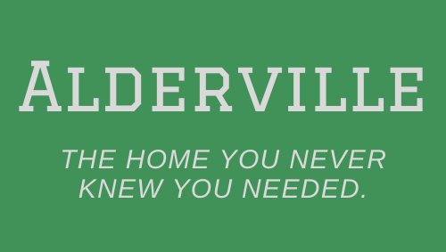

The Home of Breton
Welcome to Alderville, Maine!
Alderville is a small town with a population of about 2,500 people. This small population count includes all students, faculty, and staff at Breton Academy of Magic (BAM), all employees and staff of Breton Alliance, Inc. headquarters (BAI), as well as the unsuspecting villagers who think they just live in a typical small town.
Here’s a map showing where Alderville is located in Maine.
Pretty remote, huh? The city is squashed between Eagle Lake and Square Lake (which is not a square), and it is pretty close to the small city called Eagle Lake (population 805). But don’t let the map fool you, it’s only a three and a half hour drive from Bangor, ME, our nearest international airport, and an hour drive from Caribou, ME, our closest bigger town (population 7,600). Alderville is located about 16 miles off of both Highway 11 and Highway 161.
But don’t get us wrong, there’s something special about living in a town this small. Everybody knows everybody, gossip spreads like no other, and everybody is up in each others’ business. However, at the end of the day, the whole town is unified and everyone can count on each other.
As long as you can stay out of the line of gossip-fire, the small and quaint town of Alderville has everything you’d want it to offer. There’s the Sheriff’s Department (104 Kellard Ave) and Doc Hubbard’s office (127 Kellard Ave). Doc Hubbard is one of the best local doctors around (he also brings in a dentist from Caribou three times a year), but for anything serious, we recommend visiting Cary Medical Center in Caribou*. There’s Adam’s Grocery and The General Store if you need to get any shopping done. There’s Lisette’s Bookshop (named after the bookshop’s founder), the Candy & Creamery, and Lizzie May’s Café. There’s even more shops, cafés, and hang-out spots along Kellard, and they’re all intimate and cozy. We hope you’ll get a chance to wander the streets of Alderville to your heart’s content soon.
Most of the townfolk live within a mile of Kellard Ave, making even wintertime commutes short. Unfortunately, there’s no public schools in Alderville—any children (there aren’t many to begin with) have to attend schools in Caribou.
Here’s a photo of Alderville in the summertime:
About six miles from the center of Alderville lives the reason this small town exists: Breton Academy of Magic and Breton Alliance, Inc.
It’s vital to remember that there aren’t many townfolk that know BAM and BAI exist. Of course, they’re aware there’s an elite academy that’s very hard to get an invitation to. They’re aware the academy is located on a large amount of empty land that the institution owns, with a large gate surrounding it all. But for what exactly the school teaches… well, there’s been a rumor for everything. Furthermore, most residents aren’t even aware that BAI exists. Since the entire facility is underground, most residents don’t even think twice about what else may be located on the Breton property.
Because of this, it’s very important that students, faculty, newcomers, and tourists (yes, we occasionally get tourists) try not to bring up “The Academy”—it reminds everyone of the town’s biggest mystery and most well-kept secret.
All of this aside, our whole community wants to wish you a warm welcome. Although the majority of your days will be spent at either the Academy or BAI headquarters, or both, we’re sure you’re going to love this quirky little town just as much as we do.
Welcome to Alderville, Maine. Welcome home.

*Students, faculty, and staff of BAM and BAI should not visit Doc Hubbard or Cary Medical Center unless recommended by onsite BAM/BAI medical personnel.